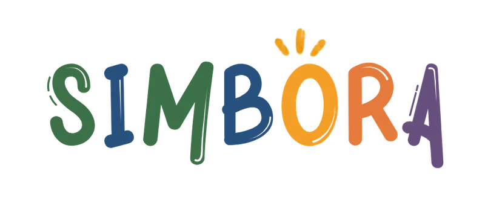
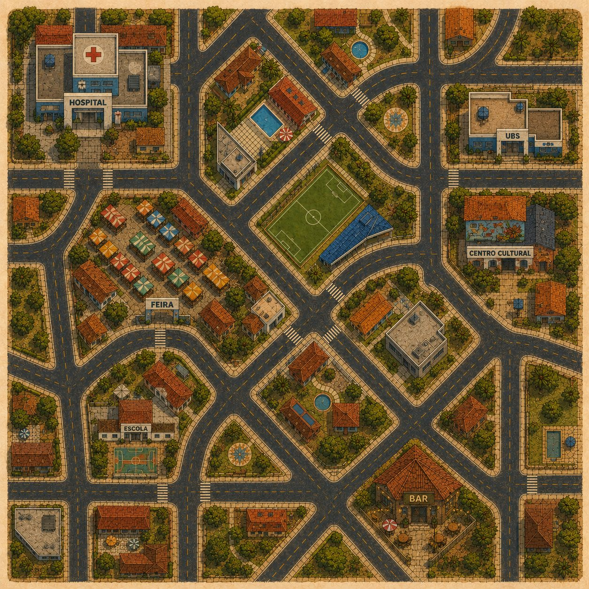

Abertura. Deixe a logo respirar um instante e avance.

Ninguém sabe quem está infectado olhando. Nem no jogo, nem na vida.
Jogo de prevenção de ISTs e gravidez na adolescência para o ensino médio · PrevenTechMA
Abrir com calma, sem pressa. "Muitas ISTs não dão sintoma. Você não descobre olhando para a pessoa, só testando. A gente transformou essa ideia num jogo."
Olhe para essas seis pessoas.
Quem delas tem uma IST?
?
Júlia
?
Carlos
?
Marcos
?
Ana
?
Pedro
?
Lúcia
Não dá para saber olhando.
Muitas ISTs não dão sintoma. Só a testagem revela. No Simbora, é igual.
Interativo: pergunte para a banca. Deixe 2 segundos de silêncio. (→) mostra os "?" → (→) a frase-chave. "Ninguém aqui acertou, porque não tem como acertar. E é exatamente isso que o jogo ensina."
01 O problema
Os jovens do Maranhão estão mais expostos e menos preparados.
Nascidos vivos de mães com até 19 anos
Maranhão
Brasil
"No Maranhão, [X]% dos bebês nascem de mães adolescentes, contra [Y]% no Brasil. A sífilis segue crescendo entre jovens. E boa parte dessas infecções não dá sintoma nenhum." Preencha os DADOS no topo do script.
02 O que já existe
Informação existe. Prática de decisão, não.
O que existeO que falta
Palestra pontual / PSEContinuidade e prática
Cartilha, vídeoDecidir, errar e ver a consequência
Professor sem materialAula pronta, sem constrangimento
"Ninguém aqui está partindo do zero: tem PSE, tem cartilha, tem palestra. Mas tudo isso é passivo. O jovem ouve e não pratica a decisão. E o professor fica sem material para um tema que constrange a turma." Se tiver relato de educador, cite aqui.

03 A solução
E se o aluno fosse o agente de saúde da comunidade?
No Simbora, o aluno cuida de um bairro vivo. Cada pessoa tem rotina, parceria e objetivo, e um kit de prevenção que vai acabando.
Quando o kit acaba, é hora de agir.
"O aluno observa um bairro vivo. Cada personagem tem uma vida, um parceiro, um objetivo. Quando o kit de prevenção de alguém está acabando, é hora de agir: aconselhar um teste ou montar um kit novo com ele."
04 Como funciona
Não é quiz. É gestão de uma comunidade.
Como na vida real, conselho dado com pressa ou para a pessoa errada é rejeitado, e a confiança cai.
Confiançaa reputação do aluno na comunidade
Observar
A mochila mostra o preparo, nunca a saúde.
Abordar
Aceitam o conselho conforme a confiança conquistada.
Agir
Montar o kit no posto ou levar para testar.
Consequência
A confiança sobe ou cai. O mapa segue vivo.
"Não é um quiz. O aluno gerencia uma comunidade inteira. E, como na vida real, conselho dado com pressa ou para a pessoa errada é rejeitado."
05 Jogo rodando
PROTÓTIPO REAL · FASE 1
Um bairro vivoCada pessoa circula com rotina própria: casa, escola, praça, feira.
A ficha dá o contextoParceria, objetivo, quando testou e quão resistente a pessoa é a conselhos.
Testar ou montar o kitO aluno escolhe a conduta. A infecção segue invisível até o teste.
Deixe o vídeo falar por alguns segundos antes de comentar. "Isso aqui já está rodando. Cada pessoa circula sozinha e gasta o kit nos lugares por onde passa."
06 O diferencial
A mecânica é a aula.
No jogoO aluno aprende
O estado de saúde é oculto; só o teste revela.
Não dá para saber olhando. Muitas ISTs são assintomáticas.
Testar cedo demais dá resultado não confiável.
Janela imunológica, um conceito que quase nenhum jovem conhece.
O médico aponta o que faltou no kit, sem nota de "% de segurança".
Proteção total não existe: prevenção combinada e dupla proteção.
Quem adoece é tratado e volta ao bairro.
IST tem tratamento. O SUS funciona. Adoecer não é vergonha.
Slide mais importante. Revele uma linha por vez (→). "Aqui está o que nenhuma cartilha consegue fazer. O jogo nunca mostra quem está infectado. A única forma de saber é testar, e testar no momento errado dá resultado falso. O aluno não decora isso, ele vive isso."
07 Segurança
Feito para menores de idade e para a sala de aula.
IA com trava
Responde só a partir de base curada: Ministério da Saúde, SUS, OMS/OPAS. Fora da base: "procure a UBS".
Acolhimento
Relatos de violência ou sofrimento recebem acolhimento e canais reais de ajuda.
Sem estigma
Nenhum personagem é marcado como "doente". Resultado positivo vem com cuidado e tratamento.
LGPD
Interesses só em dados agregados e anônimos. Consentimento via escola e responsáveis.
Currículo e revisão
Alinhado à BNCC e ao Programa Saúde na Escola. Conteúdo revisado por .
"Sabemos que IA conversando com adolescente sobre sexualidade assusta. Por isso ela é travada: só responde o que está na base oficial e, quando não sabe, manda para a UBS."
08 Onde estamos
O núcleo do jogo já está rodando.
Centelha III FAPEMA · aprovado
você está aqui ↓
Mapa vivo
NPCs circulando e consumindo o kit
Confiança
Minigames
Consultório IA
Piloto
"Já temos o núcleo da simulação rodando — vocês viram no vídeo. Os próximos passos são os minigames que fazem o jogo ensinar e, em seguida, o piloto."
09 Validação
O que vamos provar no piloto.
H1
O aluno aprende
Pré/pós-teste em janela imunológica, ISTs assintomáticas e dupla proteção.
Ganho significativo
H2
Cabe numa aula
Missão concluída em 10–20 minutos.
≥ 80% das turmas
H3
O professor adota
5 a 10 entrevistas semiestruturadas com educadores.
Intenção de uso declarada
H4
Alguém paga
Conversa com Secretaria de Educação ou de Saúde.
1 carta de intenção
3 escolas 30–50 alunos consentimento dos responsáveis + assentimento metas ainda não testadas
"Não vamos medir só se o aluno gostou. Vamos medir se ele entendeu a janela imunológica, que hoje quase ninguém sabe, e se uma secretaria pagaria por isso."
10 Mercado
Mercado em reais, focado no ensino médio.
TAM
alunos de ensino médio no Brasil × preço
SAM
rede estadual do Maranhão × preço
SOM
fatia realista do SAM em 3–5 anos
TAM
SAM
SOM
"Nosso público é o ensino médio. Só a rede estadual do Maranhão tem [N] alunos. A R$ [P] por aluno/ano, isso já representa R$ [X]." Os valores são calculados a partir de DADOS no topo do script.
11 Modelo de negócio
Quem já tem o dever de educar em saúde, paga.
Secretaria
Educação ou Saúde (B2G). Escolas privadas (B2B) como entrada.
Licença anual
por aluno:
Professores
Formação e relatório pedagógico da turma (agregado).
Alunos
Jogam em sala, no navegador, no celular ou no PC.
Ciclo de venda B2G
Custos principais
Desenvolvimento · curadoria de conteúdo de saúde · infraestrutura da IA
"Vendemos para quem já tem a obrigação de fazer educação em saúde nas escolas: as secretarias."
12 Equipe
Quem faz o Simbora.
Uma frase por pessoa sobre por que ela está no time. Use fotos reais da equipe (não geradas): salve em assets/team/ e preencha EQUIPE no script.
13 O pedido
Simbora com a gente?
3 escolas de ensino médio no Maranhão para o piloto em
Também buscamos:
Fale com a gente
Ninguém sabe olhando. Mas todo mundo pode saber.
Feche voltando ao gancho: "Ninguém sabe quem está infectado olhando. A gente quer que cada jovem do Maranhão saiba disso antes de precisar saber. Simbora?"